Presenter: Tran Ngoc Duy - M1 Presentation day: 23/03/2026 Duration: 60 minutes
Author: Subramanian Sundaram, Petr Kellnhofer, Yunzhu Li, Jun-Yan & Wojciech Matusik
Affiliation: MIT (Massachusetts Institute of Technology)
Journal: Nature
Year: 2019
https://doi.org/10.1038/s41586-019-1234-z
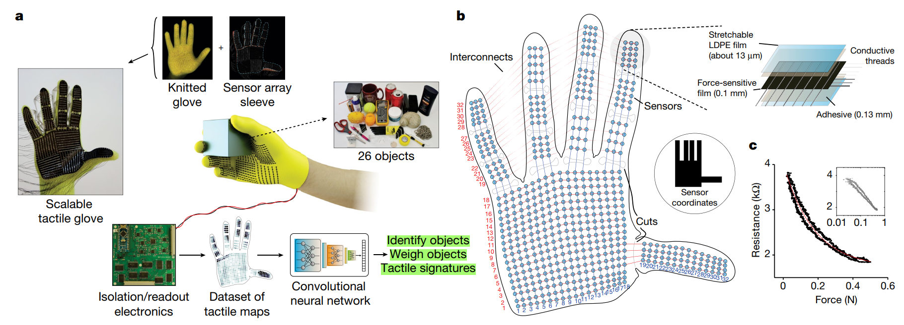
The STAG: a low-cost, scalable tactile glove and a platform to learn from the human grasp.
Background: Humans possess a remarkable ability to rely on tactile sensing alone, even without visual input, to recognize objects, estimate their weight, and infer effective grasping strategies. In contrast, tactile sensing in robotics remains limited by several major challenges.
Objective of the Paper:
Tactile Glove Features:
Result:
The glove consists of 548 tactile sensors and the 64 electrodes (64 wires) attached on top of a custom knit glove (it only have 548 sensors due to the area in hand shape, so some sensors are cut off). This sensor array consists of a force-sensitive film (FSF) (0.1 mm thick) addressed by a network of orthogonal conductive threads (0.34 mm) on each side, insulated by a thin both side adhesive (0.13 mm) and a low-density polyethylene (LDPE) film (about 13 μm)
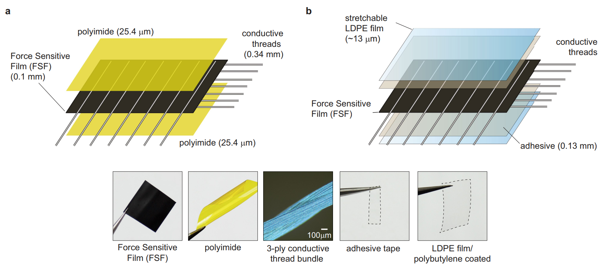
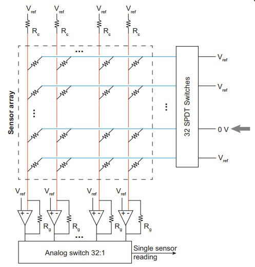
Sensor laminate manufacturing process in detail:
Working principle of FSF (Force Sensitive Film)
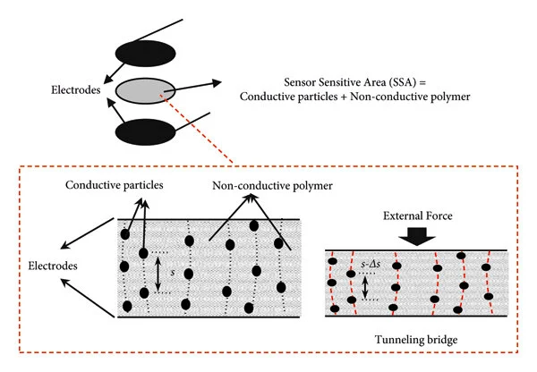
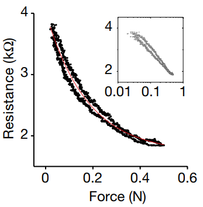
Force-sensitive film works by using the change in resistance of a specific polymer to detect the force applied to the film. Inside the polymer, there are conductive particles dispersed within a non-conductive polymer matrix. When force is applied to the surface of the film, which also acts as the electrodes, the distance between the conductive particles decreases. This reduces the resistance between the two electrodes. Based on this principle, the applied force can be measured by monitoring the resistance and a reference voltage.
Dataset Collection: Method: For object recognition, the authors use a modified ResNet-18 CNN (1 initial convolution layer + 16 convolution layers inside the residual blocks + 1 final fully connected layer) to identify 26 objects. Since the tactile input is only 32 × 32, they reduce the initial kernel size and stride so the network better matches the spatial scale of the tactile signal. They also use dropout and noise augmentation to reduce overfitting.
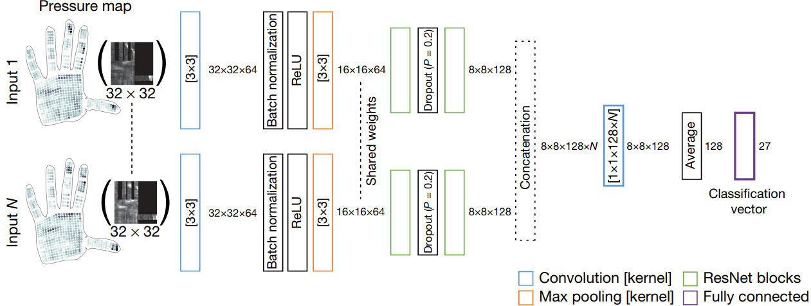
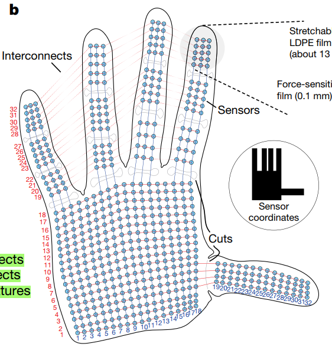
An important design choice is that the model can take N tactile frames from a single interaction instead of just one. Each frame goes through the same CNN branch, and the features are combined before classification. The idea is that different grasps of the same object provide complementary tactile information.
Result: The classification accuracy increases as the number of input frames N increases, reaching its best performance at about 7 input frames. This makes sense: multiple tactile contacts provide more information about the object than a single grasp snapshot. Figure 2b shows both Top-1 and Top-3 accuracy improving with N.
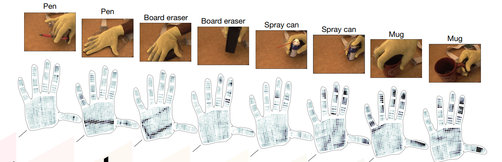
The confusion matrices show that: light or small objects such as the spoon, coin, and safety glasses are harder to classify, larger and heavier objects with more distinct tactile signatures, such as the tea box, are easier to identify, objects with similar size, shape, or weight are more likely to be confused. The examples in Figure 2c also show that the same object can be easier or harder to identify depending on the grasp. For example: a mug is easier to recognize when grasped by the handle than from the side, a pen is easier to identify when it contacts the palm than when it is only between the fingers. This suggests that the tactile map contains not only local contact information, but also information about hand posture.
Method: For this task, the authors recorded a separate dataset where each object was grasped from above using a standardized multi-finger grasp, so the model could not simply associate a unique grasp with a specific object.
Leave-one-out setup: when predicting the weight of one object, that object is excluded from training. This forces the model to generalize to unseen objects. Pipeline is roughly:
One tactile frame in ➜ CNN extracts features ➜ Fully connected layer outputs a single predicted weight.
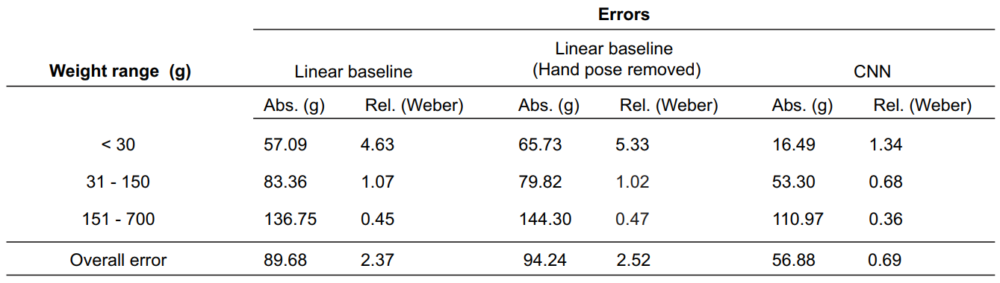
Results: The CNN achieves an average prediction error of about 56.88 g, a simple linear baseline gives about 89.68 g error. This result shows that weight estimation from tactile maps is possible, but the relationship is nonlinear. It depends not only on total force, but also on hand articulation, friction, and anti-slip forces. The CNN captures some of that structure better than a naive linear model.
Analyzing the “signatures” of human grasp: By subtracting the pre-contact frame from the post-contact frame to obtain decomposed object-related signal, separate:
Using the decomposed object-related signal, the authors compute: Pearson correlations between individual sensors, canonical correlations between larger hand regions.
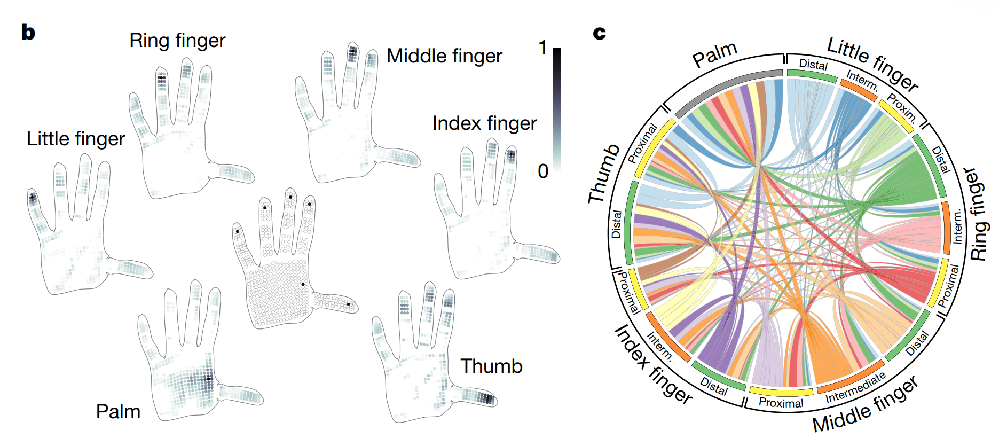
Results in Figure 3b and 3c show that:
Hand Gesture Prediction
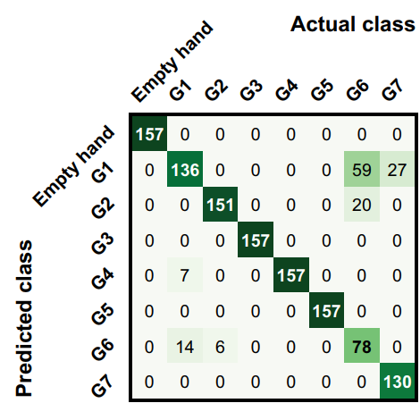
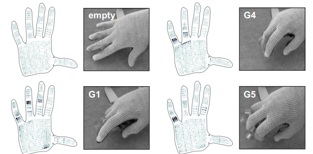
The authors tested whether the glove contains enough proprioceptive information to recognize different hand configurations. They selected seven grasp/hand poses from a grasp taxonomy, plus an empty-hand pose, and recorded tactile maps while the subject articulated those poses. After filtering, they trained the same CNN architecture on these tactile maps and found that the model could classify the poses with about 89.4% accuracy.
Hytersis experiment Temperature experiment Auxetic prototype ResNet-18 trained on the ImageNet over multiple cycles
This work is very strong, but several aspects could still be improved. The system measures only normal force and does not capture shear forces, even though shear is often important in stable grasping and slip detection. In addition, the human hand can also sense other modalities such as temperature, which are not included in this tactile glove.
force on sensor → resistance change → amplifier output voltage → ADC value → tactile map